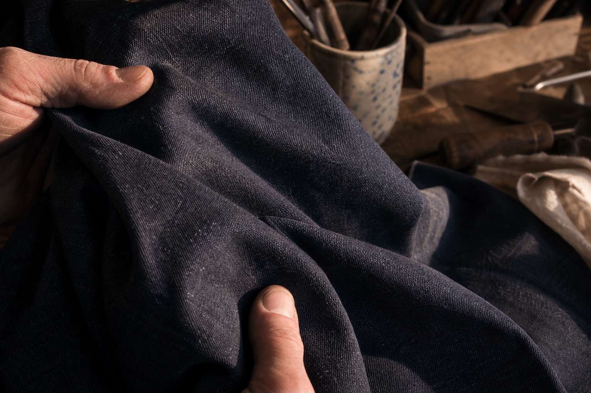
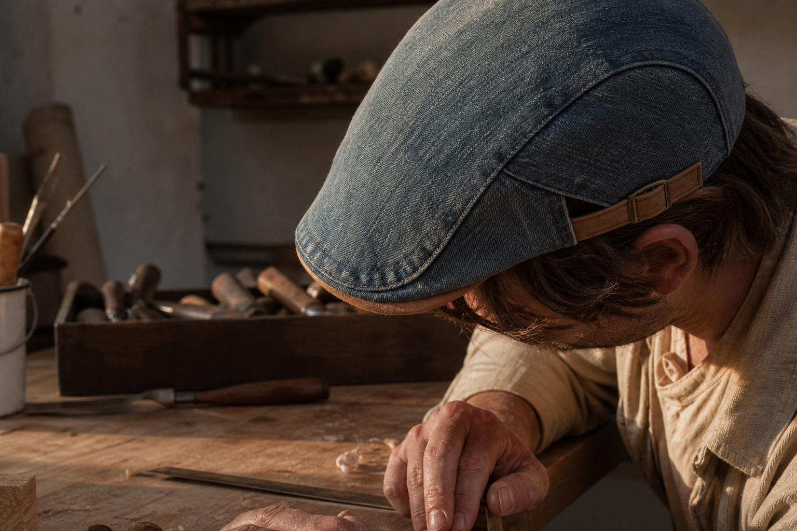
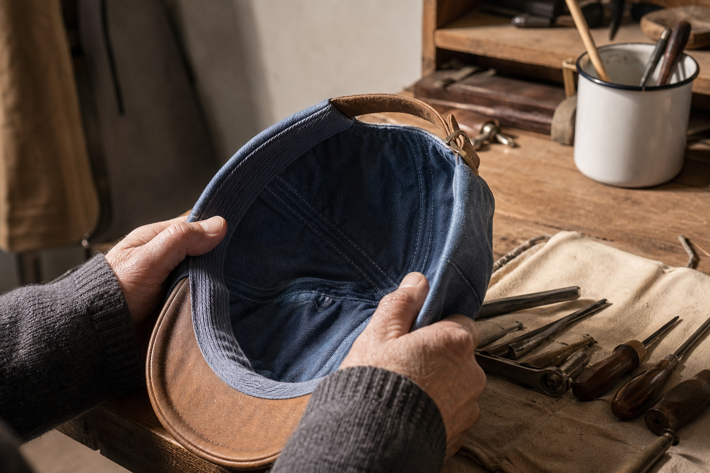
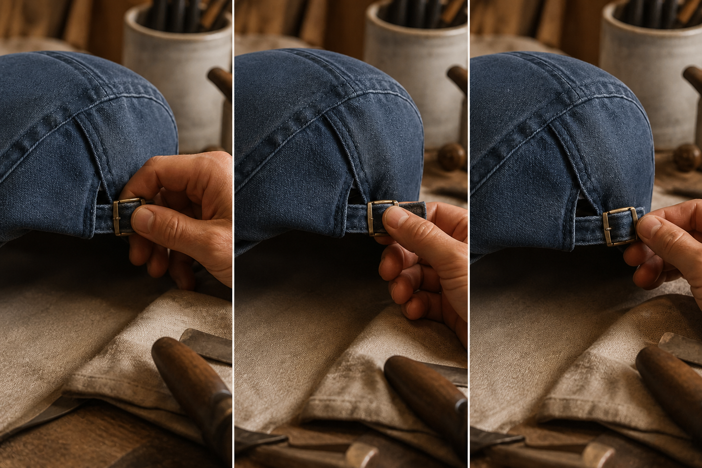
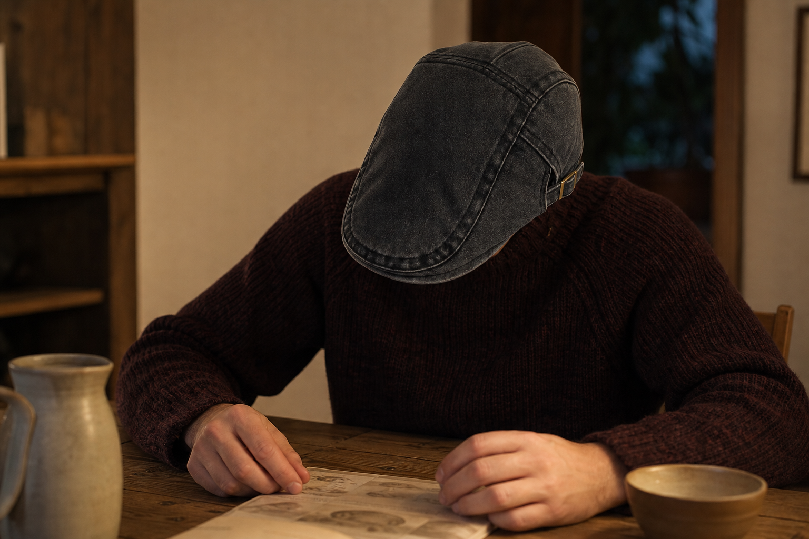
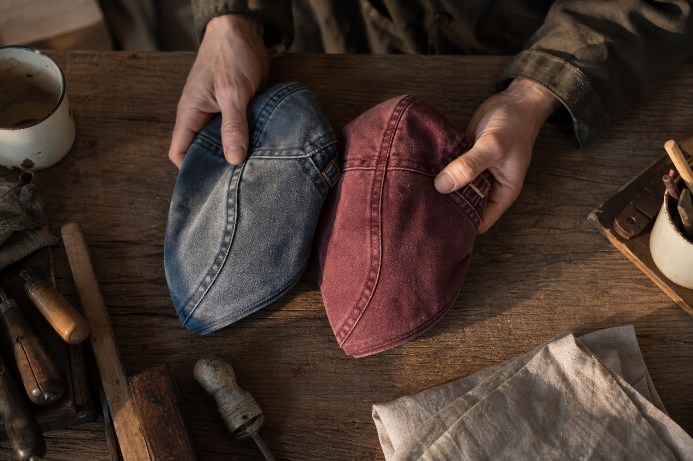

The everyday end
The Ashcroft, The Mariner, The Admiral. Light blue through to deep indigo. The one you leave by the door and stop noticing.
October, 6pm, a doorway
Free shipping in France, 30-day returns. Four caps in the cupboard. Not one of them I ever chose because I liked it.
My hand went up before I was even inside. Cap off, folded into my coat pocket, hair flattened where the band had sat. Nobody asked me to. I just did it, the way I'd done it at every doorway for five years.
In the survey we ran, 46% of men say they wear a cap to cover hair loss. 38% take it off every single time they walk into a room. So the thing you bought to feel easier is the thing you spend the evening managing.
That's the cost. Not the price of the cap. The hand that keeps going up, the winter you decide it's simpler to leave the house with nothing on your head at all. Another season of it starts this week.
I didn't fix that by buying a better cap. I fixed it by picking up a different cloth.
The whole story, from the doorway on
So I went looking for numbers before I went looking for a cap.
We asked men why they wear one. Nearly half gave the same reason I would have given at that doorway. Only 31% said style. And when we asked whether they take it off on entering, 38% answered always, 34% answered sometimes.
That is roughly seven men in ten whose hand goes up at a door.
One more answer stayed with me. 19% said they had thrown a cap out because it scratched or gripped. Nobody keeps a tool that hurts to hold.
What none of these figures explain is why the hand goes up in the first place. I found that out later, holding the cloth.
The turn
Not the shape. The cloth. That was what my hand had been objecting to for years.
I picked it up expecting the same thing I always felt. Board. That dry, papery stiffness of a cap fresh out of a packet, the one you have to break in for a month before it stops fighting your head.
It gave. Immediately, and in both directions.
The reason is in how it's made. The denim is washed in the piece, before anything is cut. The cloth is softened as fabric, not as a finished cap you're expected to wear in yourself. So there is no breaking-in period. It is soft in the hand from the first wear, which means it is soft on the head from the first wear.
And every doorway made sense at once. I wasn't taking those caps off because I was self-conscious. I was taking them off because they were stiff, and my hand had learned to end that. Ten years of a reflex I'd been blaming on myself.

Two peaks, two habits
The difference showed up in my hands before it showed up anywhere else.
The sports cap had a long peak. My hand went to it every few minutes. Pull it down, straighten it, push it back up when it sat too low.
The flat cap has a short, flat peak, taken in the same piece as the shell. There is nothing sticking out to correct. Once it was on, my hands had no job.
Be clear about what that costs you: it does not cover the forehead the way a long-peaked cap does. This is not a technical cap. It will not stay put on a bike at speed. If that is what you came for, buy the sports cap and be happy with it.
What it gave me instead was silence from my own hands. That is the whole trade.
| The Washed Denim Collection | Alternative | |
|---|---|---|
| The peak | Short and flat, cut in the continuity of the shell, no hard break | Long and moulded, a separate piece that sits out in front |
| What the hand does | Sets it once, then leaves it alone | Adjusts, tugs, straightens, all day |
| The shell | Washed denim, soft in the hand from the first wear, sits low without gripping | Stiff panels that press and need repositioning |
| Forehead coverage | Sits low, but a short peak: less shade than a long-peaked cap | Full forehead coverage, made for sport |
| What it is for | Town, outdoors, the table, years of it | Sport, speed, technical wear |

Inside the shell
Run it round the lining. Nothing lifts, nothing bubbles.
The four caps I bought before this one all failed in the same place, and I never once thought to check it before paying.
So now I check it first. Thumb inside the shell, all the way round. The lining is sewn, not glued. A glued lining comes away with heat and blisters on your forehead, and that is the most common fault on cheap caps. Mine did it. I called it sweat.
The panels are assembled, the head-band is cotton, and the peak is taken in the same piece as the shell, so there is no hard break where a sports cap has a seam you can feel with a fingernail.
Nothing in there for a hand to pick at. That is the whole point.

The gesture you make once
One cut, made to fit. You size it the day it arrives, and that is the last time you think about it.
The old caps had a plastic strap at the back. I moved it in the car. I moved it again at the door. My hands were always up there, adjusting something.
This one has a side-adjuster. You pick it up, set it to your head, put it back down. That is the whole operation.
One cut, made to fit any head, so it is impossible to get the size wrong. There is nothing to choose, nothing to measure, nothing to get wrong on the order page.
After that, the shell sits where you left it. Your hands go back to doing what hands do. It becomes the tool you forget you own.

Later that autumn
A whole dinner indoors, and my hand stayed on the table.
I noticed it at the end, not the start. Dessert had come and gone. My hand had never once gone to my head.
That was the whole event. No doorway pause, no cap folded on my knee, nobody asking me why I'd kept it on. I'd set the side-adjuster once, weeks before, and hadn't touched it since.
One of our customers put it better than I can:
> "Je l ai portee tout un diner sans que personne me demande pourquoi je gardais ma casquette. C est la premiere fois."
That's the point I'd missed for four caps and five years. The good ones don't get remarked on. They get forgotten, like the tool you've owned so long you stopped seeing it on the bench.

Nine washes, all in stock
I didn't buy a fix. I picked a colour, the way you pick a tool you plan to keep.
For five years I bought caps to cover something. I never once stood there choosing between shades. That was the tell: you don't pick a favourite among things you're ashamed of.
This time I did. Nine washes on the table, tan suede trim on every one, and my hand went to a wash before my head had an opinion. That's the whole change.
Start light blue if you want the one you'll reach for on a Tuesday. Go Claret or Burgundy if you're done being careful. The collection keeps growing, so new washes land after this one.
The Ashcroft, The Mariner, The Admiral. Light blue through to deep indigo. The one you leave by the door and stop noticing.
The Chestnut, The Claret, The Sherwood, The Cotswold. Colour with something to say, without saying it loudly.
The Blackthorn, The Onyx. Blue washed down so far it reads near black.

I threw out three before this one. One scratched. One gripped by the end of the afternoon. One I just stopped picking up off the shelf.
I am not alone in that. Asked what had already made them bin a cap, 19% of men answered that it scratched or gripped, and 13% that they simply tired of it.
So I stopped counting in caps and started counting in seasons. A cap you keep taking off costs you its price every year you replace it. One you leave on gets divided by every season you wear it, and the number keeps falling.
$29.99 instead of $59.98. Free worldwide shipping, no minimum. That is the whole arithmetic.
In the pocket
"On dirait du carton." That was my fear too, before I picked one up.
My old caps travelled badly. Crushed in a bag, the peak came out bent for good.
This one folds into a coat pocket. I pull it back out, run a thumb along it, and it lies flat again. No hard crease to smooth away.
That comes from the cloth being washed in the piece before it is cut. Soft in the hand from the first wear, not after a season of breaking it in.
It is the tool you forget you own. In the pocket when you don't need it, on your head in one gesture when you do.
100-Day Fit Guarantee
A hundred days is long enough to stop noticing you're wearing it.
Don't judge it in front of a mirror. Pick it up, set the side-adjuster once, and walk out with it on. A doorway, a table, a coat pocket. That's where you find out.
You have 100 days to do exactly that. It sits right, or your money back.
Shipping is free worldwide, no minimum. Payments are encrypted and your card details aren't stored. If something's wrong, write to help@ashcroft-flatcaps.com; support answers 24/7.
100 days to send it back
Word for word
I wrote them down. Here is what changed my mind on each one.
I said all four in the shop, holding it in one hand. Nobody answered them for me, so I checked them myself.
The answers below are short on purpose. Each one is something you can test with your hands, outside, before you decide.
It is the first comment in half of our campaigns, so I take it seriously. But look at one from the side before you judge: the long peak and the stiff shell are what age a cap. This peak is short and the washed denim sits low and soft. The profile is a different line entirely.
I answer on the cut, not on what is under it. One cut, made to fit, sitting low to follow your face, with a tan suede trim. That is a shape you chose. Never a costume.
Not in the hand. It is washed denim, lived-in from the first wear. Fold it into a coat pocket and it comes back out flat, not creased.
The denim is washed in the piece before cutting. The excess dye leaves in the industrial wash, not on your skin.
Size exchange during the return window. And try it outside, not only in front of a mirror.
Before you order
Short answers to the last five questions I had in my hand before I ordered mine.
None of this changed my mind. It just took the last things off the table.
There is nothing to know. One cut, made to fit. You set the side-adjuster once and it stays put, on any head. Getting it wrong is not one of the options.
The denim is washed in the piece before cutting. The excess dye leaves in the industrial wash, not on your skin.
Cotton denim breathes. The polyester-lined sports cap you pick up out of habit is the warmer of the two.
Size exchange during the return window. And take it outside before you decide, not just in front of a mirror.
No. It is not a piece of sportswear and does not pretend to be. It is the thing you pick up on the way out and stop thinking about.
One cut, made to fit
The doorway in October was the last time I reached up without thinking.
I set the side-adjuster once. I have not touched it since. That is the whole story of this page: a cap that stays where I put it, and hands that stopped asking questions.
It is the tool you end up forgetting you own. Every week you keep the old one is another week of taking it off at the door.
$29.99 instead of $59.98. Buy 2, get 1 free. Free worldwide shipping, no minimum.
Free worldwide shipping. help@ashcroft-flatcaps.com, 24/7.